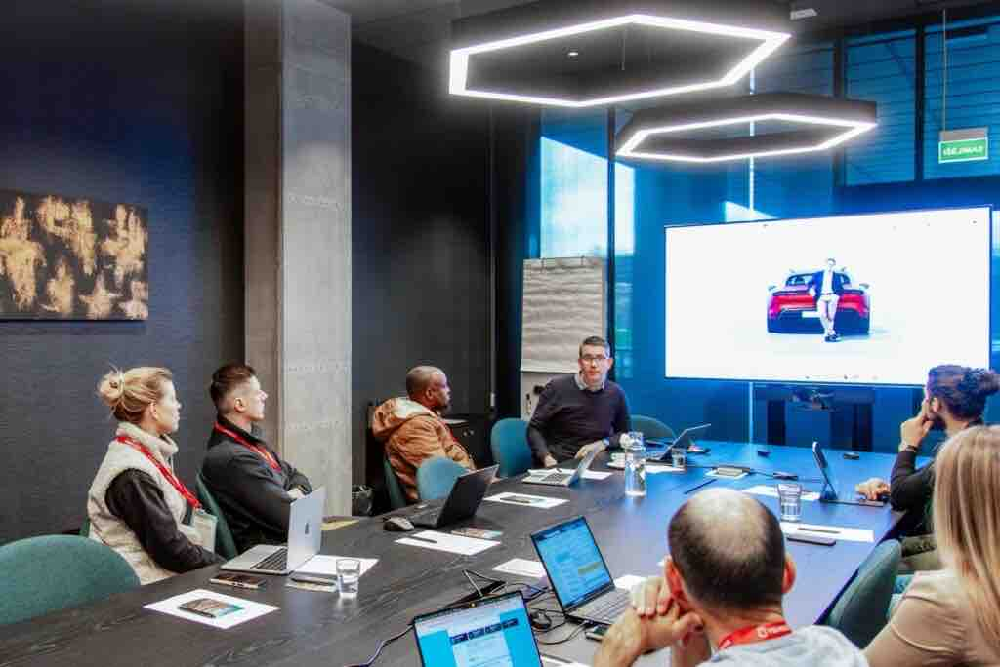

Peter Mesarec na evropskih odrih delil slovensko znanje o umetni inteligenci

Član strokovnega sveta Zavoda AI-D, Peter Mesarec, je ta teden v Vilniusu navdušil udeležence konference RPA Europe 2025 s svojo celodnevno delavnico o preoblikovanju delovnih procesov z uporabo umetne inteligence. V praktičnem modulu Analyze Your Workflows and Upgrade Them with AI je udeležencem pokazal, kako prepoznati časovno potratne korake, katere naloge lahko prevzame UI ali avtomatizacija ter kako s pomočjo metodologije ICE (Impact, Confidence, Ease) oblikovati konkreten, izvedljiv akcijski načrt.
Mesarec s konferenco sodeluje tudi kot govorec. V predavanju 7 Steps to Leading AI Adoption in Your Company izpostavlja strateške korake, ki jih morajo organizacije osvojiti, če želijo UI uvajati premišljeno, sistematično in z jasnim poslovnim učinkom.
Delavnica, ki je v Vilniusu požela veliko zanimanja, bo v začetku prihodnjega leta na voljo tudi slovenskim organizacijam: Zavod AI-D jo bo gostil 20. januarja 2026, z enakim poudarkom na konkretnih primerih, strukturiranem delu in neposredni uporabnosti za ekipe.
V Zavodu AI-D verjamemo, da prav takšne vsebine krepijo domači ekosistem UI – s prenosom znanja, ki ni teoretično, ampak neposredno uporabno pri modernizaciji procesov in gradnji učinkovitih delovnih okolij.